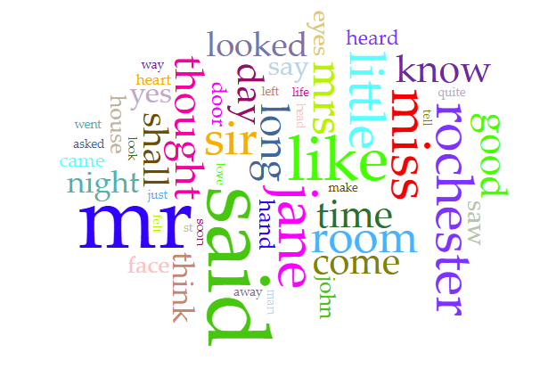
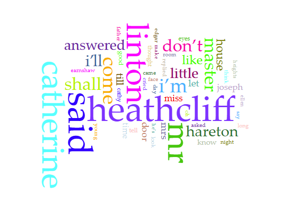
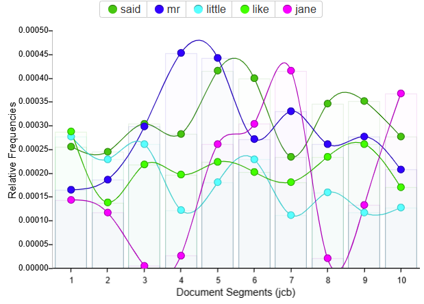
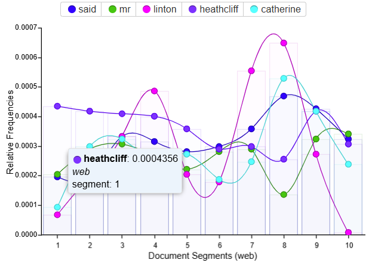

As indicated in the title, I will select two texts and/or collections of texts for analysis and comparison.
I have chosen "jcb.txt" and "web.txt"—drawn from the course materials—to serve as the basis for this comparison and analysis.



